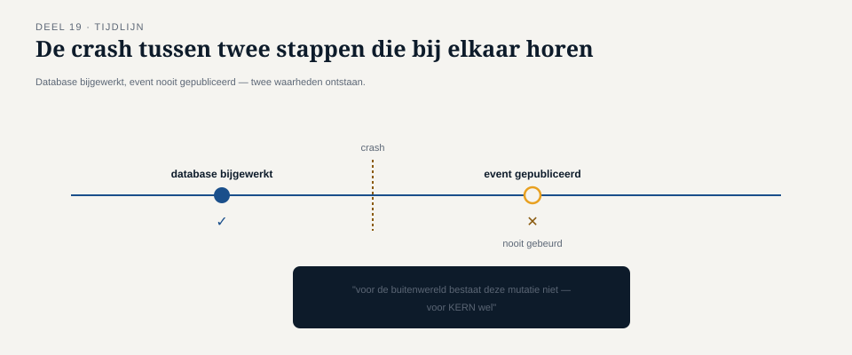

Deel 19 — Outbox-pattern en transactional messaging
Reader · Ductus-cursus Enterprise Integration Patterns · niveau 2 (professional) · deel 19 van 22
19.0 De gebeurtenis die nooit werd gepubliceerd
Bij het bouwen van de compenserende acties uit deel 18 ontdekte een ontwikkelaar in het KERN-team een subtiele, structurele fout die niet specifiek aan saga's lag, maar aan iets fundamentelers: de manier waarop KERN al sinds niveau 1 zijn database bijwerkte én het bijbehorende event publiceerde. De code deed, vereenvoudigd, dit: eerst de lokale database bijwerken (bijvoorbeeld: mutatie geregistreerd), en dán, in een aparte, volgende stap, het event "mutatie geregistreerd" publiceren naar het mutatie-gebeurd-kanaal.
Bij een test die bewust een storing simuleerde tussen deze twee stappen — de database-update lukte, maar de applicatie crashte vlak vóór het publiceren van het event — bleek de database correct bijgewerkt, maar had niemand ooit een event ontvangen. Het Nabestaandenloket, de audit-trail, de risicomanagement-rapportage: geen van drieën wist ooit dat deze mutatie had plaatsgevonden, terwijl KERN's eigen administratie hem wél bevatte. Precies het soort inconsistentie die niveau 1's betrouwbaarheidspatronen (deel 7-9) zouden moeten voorkomen — maar geen van die patronen beschermt tegen een fout die vóórdat een bericht ooit het kanaal bereikt, al ontstaat.

Dit is geen incident zoals de vorige — geen enkele klacht kwam ooit binnen, want niemand miste iets waarvan hij niet wist dat het had moeten bestaan. Dat maakt dit probleem gevaarlijker dan de zichtbare incidenten uit eerdere delen: het is een stille inconsistentie tussen wat een systeem lokaal weet en wat het naar buiten toe communiceert.
DAGDEEL A
19.1 De dual-write-valkuil
Het probleem dat KERN's ontwerp blootlegde, heeft een naam: de dual-write-valkuil. Elke keer dat een component twee afzonderlijke, niet-atomaire handelingen moet uitvoeren die logisch bij elkaar horen — hier: een lokale databasewijziging én het versturen van een bericht — bestaat er een venster waarin de ene handeling lukt en de andere niet, ongeacht in welke volgorde ze worden uitgevoerd.
Het is de moeite waard beide volgordes te ontleden, want ze falen op verschillende, maar even problematische manieren:
Eerst database, dan bericht (zoals bij KERN). Als de applicatie crasht tussen de twee stappen, is de database bijgewerkt maar is er nooit een bericht verstuurd — een stille inconsistentie waarbij de "waarheid" in de database voorloopt op wat de buitenwereld weet.
Eerst bericht, dan database. Het omgekeerde risico: als het bericht wél succesvol wordt verstuurd, maar de daaropvolgende databasewijziging mislukt (bijvoorbeeld door een constraint-violatie of een tijdelijke storing), hebben ontvangers van het bericht al gereageerd op een gebeurtenis die, wat de bron betreft, feitelijk nooit heeft plaatsgevonden — de buitenwereld loopt nu voor op de eigen administratie.
Beide varianten zijn instanties van hetzelfde onderliggende probleem: twee handelingen die logisch één geheel vormen, worden technisch als twee, onafhankelijk kunnen falen, handelingen uitgevoerd. Dit is exact het probleem dat deel 18 op procesniveau behandelde (ACID-atomiciteit niet haalbaar over systemen heen), nu toegepast op het kleinst mogelijke geval: één systeem, twee lokale acties.
Kernzin 20 van de cursus: elke keer dat "wijzig de database" en "verstuur een bericht" als twee losse stappen worden geschreven, ontstaat een venster waarin de werkelijkheid van het systeem en de werkelijkheid die het communiceert, uit elkaar kunnen lopen — en dat venster is klein, maar niet nul.
19.2 Het outbox-pattern
Het outbox-pattern lost de dual-write-valkuil op door de tweede handeling (het versturen van een bericht) te herformuleren als onderdeel van dezelfde lokale, atomaire databasetransactie als de eerste handeling, in plaats van als een aparte, volgende stap.
Concreet: in plaats van direct een bericht op het externe kanaal te plaatsen, schrijft de applicatie het te versturen bericht weg naar een aparte tabel binnen de eigen database — de outbox-tabel — als onderdeel van precies dezelfde transactie die ook de eigenlijke databasewijziging bevat. Omdat beide schrijfacties (de eigenlijke wijziging en de outbox-regel) binnen één lokale database-transactie vallen, garandeert de normale ACID-atomiciteit van die database dat ze samen slagen of samen falen — er is geen venster meer waarin de ene wel en de andere niet lukt, want ze zijn technisch nu één handeling.
Een aparte, onafhankelijke component — de outbox-relay (of message relay) — leest vervolgens periodiek, of zo snel mogelijk na elke schrijfactie, nieuwe regels uit de outbox-tabel en publiceert ze daadwerkelijk naar het externe kanaal, waarna de regel als verwerkt wordt gemarkeerd (of verwijderd). Deze relay-stap is zelf weer een gewone, asynchrone integratie met alle bijbehorende overwegingen uit niveau 1 — met name idempotentie (deel 7): als de relay een regel publiceert maar crasht vóórdat hij de regel als "verwerkt" kan markeren, moet een volgende poging hetzelfde bericht kunnen hertransmitteren zonder een dubbele, schadelijke publicatie te veroorzaken (bijvoorbeeld doordat de ontvangende kant het bericht-ID al herkent).

Vuistregel: verplaats het probleem van "twee acties die samen moeten slagen" naar een plek waar atomaire garanties al bestaan (de lokale database), in plaats van te proberen die garantie zelf, handmatig, tussen twee ongelijksoortige systemen te bouwen.
19.3 Waarom dit geen 2PC is, en dat ook niet hoeft te zijn
Het is verleidelijk om het outbox-pattern te verwarren met de distributed-transactieproblematiek uit deel 18 — beide gaan immers over "twee dingen die samen moeten slagen". Het cruciale verschil: het outbox-pattern lost dit probleem op binnen de grenzen van één enkel systeem, met één enkele lokale database, waar normale ACID-garanties al bestaan en niets geforceerd hoeft te worden. Deel 18's saga-patroon lost een fundamenteel ander probleem op: coördinatie tussen meerdere, onafhankelijke systemen, waar geen enkele gedeelde, atomaire transactiegrens bestaat of ooit kan bestaan.
Dit onderscheid is belangrijk om vast te houden: het outbox-pattern is niet een lichtere vorm van saga, en een saga is niet een opgeschaalde vorm van outbox — het zijn oplossingen voor twee verschillende schaalniveaus van hetzelfde onderliggende principe (twee handelingen die logisch samenhoren, moeten ook samen slagen of falen). Bij Meridiaan wordt het outbox-pattern toegepast binnen elke individuele stap van een saga: elke stap in het uitkeringsproces (deel 18) gebruikt zelf het outbox-pattern om zijn eigen lokale databasewijziging en zijn eigen berichtpublicatie (regulier of compenserend) betrouwbaar te combineren, terwijl de saga zelf de coördinatie tussen die stappen over systeemgrenzen heen regelt.
DAGDEEL B
19.4 Transactional messaging in bredere zin
Het outbox-pattern is de meest gangbare, praktisch toepasbare vorm van een breder principe genaamd transactional messaging: elke situatie waarin een messaging-actie (versturen of ontvangen) gekoppeld moet worden aan een lokale transactionele garantie, zodat beide samen slagen of samen falen.
Naast de "uitgaande" variant (outbox, 19.2) bestaat er een spiegelbeeldige, "inkomende" variant die dezelfde onderliggende logica volgt: wat gebeurt er als een ontvanger een bericht succesvol ontvangt (en bevestigt aan de broker dat hij het heeft), maar vervolgens crasht vóórdat hij de bijbehorende lokale verwerking heeft afgerond? Het bericht is dan, wat de broker betreft, afgeleverd en verwerkt — maar de lokale effecten ervan zijn nooit voltooid.
Dit vraagt om een vergelijkbare discipline aan de ontvangende kant: de bevestiging aan de broker (dat het bericht is verwerkt) mag pas gebeuren nadat, of als onderdeel van dezelfde lokale transactie als, de daadwerkelijke verwerking is voltooid — nooit ervoor. Veel messaging-infrastructuur biedt hiervoor expliciete ondersteuning (bijvoorbeeld door de bevestiging pas te versturen na een succesvolle lokale commit), maar het blijft een bewuste ontwerpkeuze die niet automatisch goed staat, net zoals guaranteed delivery (deel 16) een bewuste configuratiekeuze is en geen vanzelfsprekende default.
Kernzin 21 van de cursus: transactional messaging gaat niet alleen over het versturen van berichten — het geldt evenzeer aan de ontvangende kant, waar de bevestiging van ontvangst nooit voor mag lopen op de daadwerkelijke, lokale verwerking.
19.5 De relatie met idempotentie en het outbox-relay-mechanisme
De outbox-relay uit 19.2 verdient een nadere blik, omdat hij zelf een klassiek voorbeeld is van waarom niveau 1's idempotentievereisten (deel 7) nooit "klaar" zijn na de eerste toepassing, maar bij elk nieuw mechanisme opnieuw moeten worden doordacht.
De relay leest een regel uit de outbox-tabel, publiceert hem naar het externe kanaal, en markeert hem daarna als verwerkt. Als de relay crasht na de publicatie maar vóór het markeren, zal een volgende poging (of een tweede relay-instantie, voor schaalbaarheid) dezelfde regel opnieuw oppikken en opnieuw publiceren — een gegarandeerde at-least-once-levering vanuit de outbox-tabel naar het externe kanaal, met exact hetzelfde duplicatierisico dat deel 7 al identificeerde voor messaging in het algemeen. De oplossing is dan ook identiek: het bericht draagt een stabiel, uniek bericht-ID (afgeleid van de outbox-regel zelf, niet opnieuw gegenereerd bij elke publicatiepoging), en de ontvangende kant past dezelfde idempotentiemaatregelen toe als bij elk ander bericht.
Dit is een goed moment om, terugkijkend op de hele cursus, te bevestigen dat het outbox-pattern geen nieuwe, aparte klasse van betrouwbaarheidsproblemen introduceert — het combineert simpelweg twee reeds behandelde technieken (lokale ACID-transacties, en at-least-once-messaging met idempotentie) op een nieuwe plek, in plaats van een volledig nieuw mechanisme te zijn.
19.6 Terug naar KERN
Na het incident van 19.0 is KERN's mutatieverwerking herbouwd rond het outbox-pattern: elke mutatieverwerking schrijft, binnen dezelfde lokale transactie, zowel de mutatie zelf als een outbox-regel voor het bijbehorende event weg. Een relay, gebouwd volgens de discipline uit 19.2 en 19.5, publiceert deze regels naar het mutatie-gebeurd-kanaal, met een idempotent bericht-ID afgeleid van de outbox-regel.
Het resultaat: de stille inconsistentie uit 19.0 is structureel onmogelijk geworden. Als de databasewijziging lukt, staat de outbox-regel er gegarandeerd ook — ze zijn immers, technisch, één handeling. Als de databasewijziging mislukt, wordt er ook geen outbox-regel weggeschreven, en dus ook nooit een event gepubliceerd voor een mutatie die feitelijk nooit heeft plaatsgevonden.
Samenvatting van deel 19
- De dual-write-valkuil ontstaat wanneer een lokale databasewijziging en het versturen van een bericht als twee, onafhankelijk kunnen falen, stappen worden uitgevoerd — in beide volgordes (eerst database, eerst bericht) ontstaat een risico op stille inconsistentie.
- Het outbox-pattern lost dit op door het bericht als een regel binnen dezelfde lokale, atomaire databasetransactie weg te schrijven, gevolgd door een aparte relay die deze regels asynchroon publiceert.
- Het outbox-pattern is geen lichtere vorm van saga (deel 18) — het lost een probleem op binnen één systeem, terwijl saga coördinatie tussen meerdere systemen regelt; ze worden vaak samen toegepast (outbox binnen elke saga-stap).
- Transactional messaging geldt ook aan de ontvangende kant: bevestiging van ontvangst mag nooit voorlopen op daadwerkelijke lokale verwerking.
- De outbox-relay zelf vergt dezelfde idempotentiediscipline als elk ander at-least-once-mechanisme uit deel 7 — het outbox-pattern combineert bestaande technieken, het introduceert geen nieuwe klasse van problemen.
Vooruitblik
Deel 20 — zelfstandig leesbaar en los aanbiedbaar, conform de vaste structuurkeuze van de familie — behandelt contractbeheer voor asynchrone koppelingen: schema-evolutie en consumer-driven contracts voor events, nodig zodra een landschap van deze omvang en volwassenheid koppelingen moet kunnen laten evolueren zonder ze allemaal tegelijk te breken.